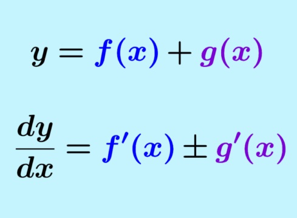

La derivada es una herramienta matemática que permite conocer cómo cambia una cantidad con respecto a otra. En términos simples, una derivada indica la rapidez con la que cambia una función en un punto específico.
Por ejemplo, si una función representa la posición de un objeto respecto al tiempo, su derivada representa la velocidad, es decir, qué tan rápido se mueve el objeto en un instante determinado.
Matemáticamente, la derivada de una función f(x) se define como el límite del cambio promedio cuando el intervalo se hace infinitamente pequeño:
f′(x) = limh → 0 [f(x + h) − f(x)] / h
Este valor se interpreta como la pendiente de la recta tangente a la curva de la función en un punto.
